Scattering states#
A scattering state is a stationary state that has a free-particle like behaviour at infinity.
If the potential \(V(x)\) tends to zero at infinity, then the energy eigenfunctions have scattering character, i.e. they have oscillatory behviour extending upto infinity.
This is possible when the eigen energy of the scattering state is greater than zero.
The Time independent Schrodinger equation (TISE) is given by
Let the wavevector be defined as
so that TISE is reduced to
Numerical solution to TISE#
Using the definition of derivative,
so that the first derivative can be approximated by
By the similar argument, it can be shown that the second order derivate can be approximated by
This is called the finite difference formula for the second order derivative.
Recurrence relation#
Let us “discretize” the position axis into equally spaced points with the spacing between consecutive points given by \(h_0\).
Let us denote the value of the wave function at position \(x_n\) as
Thus \({\psi_0, \psi_1, \ldots, \psi_n, \ldots}\) form a sequenceThe aim is to find a recurrence relation between consecutive \(\psi_n\)’s. A recurrence relation gives the value of an element in a sequence in terms of the previous elements of the sequence.
Numerov’s recurrence relation for TISE#
The forward element \(\psi(x+h_0)\) can be expresed in terms of the present element \(\psi(x)\) using the Taylor’s series expansion as
so
Similarly
Adding the above two equations gives
The right hand side has two derivative terms. The second order derivative can be expressed in terms of TISE as
whereas the fourth order derivative can be expressed as
so that second order derivative can be approximated by the finite difference formula
Thus the recurrence relation is given by
Let us express \(\psi_{n+1}\) in terms of \(\psi_n\) and \(\psi_{n-1}\) so that
This is called Numerov’s recurrence relation.
import numpy as np
import matplotlib.pyplot as plt
from scipy.constants import hbar, m_e
# global variables
xmin, xmax = -10.0, +10.0
hbar=1
m_e=1
# step potential
def step(x):
if x < 0:
return 0.0
else:
return 1.0
def inverse_step(x):
return 1.0 * step(-1.0*x)
h_0 = 1e-2
epsilon = 1e-2
psi_0, psi_1 = 0, epsilon
xs = np.arange(xmin, xmax, h_0)
def numerov(E, potential):
"""The initial two elements in the sequence {psi_n} can be chosen as 0 and epsilon"""
psis = np.zeros(len(xs))
# Get the ksquareds
#ksquareds = np.array([2.0*m_e*(E - step(x))/hbar**2 for x in xs])
ksquareds = np.array([2.0*m_e*(E - potential(x))/hbar**2 for x in xs])
for i in range(len(psis)):
if i == 0:
psis[i] = psi_0
elif i == 1:
psis[i] = psi_1
else:
numer = 2.0*psis[i-1]*(1.0 - 5.0/12.0*h_0**2*ksquareds[i-1]) - psis[i-2]*(1.0 + 1.0/12.0*h_0**2*ksquareds[i-2])
denom = 1 + 1.0/12.0*h_0**2*ksquareds[i]
psis[i] = numer/denom
return psis
# Initial wave function
psi_0, psi_1 = 0, 1.0*epsilon
# Approximate wave function
E = 0.5
psis = np.zeros(len(xs))
psis = numerov(E, step)
pots = np.array([step(x) for x in xs])
psis
array([ 0.00000000e+00, 1.00000000e-02, 1.99990000e-02, ...,
-1.47241875e+04, -1.48721680e+04, -1.50216358e+04], shape=(2000,))
fig, ax = plt.subplots()
ax.plot(xs, psis, 'k-', label=r'$\psi(x)$')
ax2 = ax.twinx()
ax2.plot(xs, pots, 'r--', label='step potential')
ax.set_xlabel('x')
ax.set_ylabel(r'$\psi(x)$')
ax.legend()
ax2.legend()
<matplotlib.legend.Legend at 0x186b593de50>
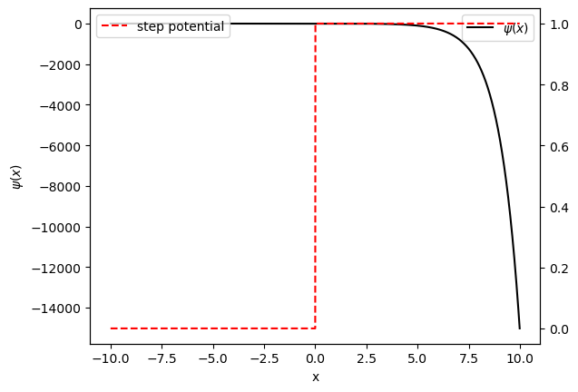
# Initial wave function
psi_0, psi_1 = 0, -1.0*epsilon
# Approximate wave function
E = 1.1
psis = np.zeros(len(xs))
psis = numerov(E, inverse_step)
pots = np.array([inverse_step(x) for x in xs])
fig, ax = plt.subplots()
ax.plot(xs, psis, 'k-', label=r'$\psi(x)$')
ax2 = ax.twinx()
ax2.plot(xs, pots, 'r--', label='inverse step potential')
ax.set_xlabel('x')
ax.set_ylabel(r'$\psi(x)$')
ax.legend()
ax2.legend()
<matplotlib.legend.Legend at 0x186b5d7ee90>
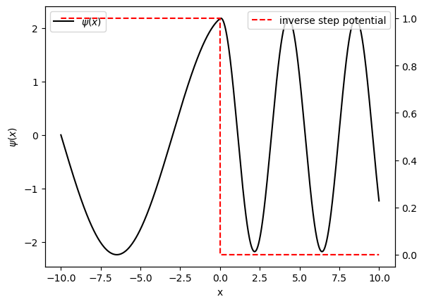
Smooth step potential#
However, the step potential is not capturing the change in the amplitude of the waves in the two regions. This is because of the “abruptness” of the potential. In nature, nothing is abrupt. So let us substitute the step potential with a more realistic potential
where \(T\) is a fictitious temperature with units in position.
# globals
T = 1
V0 = 1
def smooth_step(x):
return V0/(1 + np.exp(-1.0*x/T))
pots = np.array([smooth_step(x) for x in xs])
fig, ax = plt.subplots()
ax.plot(xs, pots, 'b-', label='smooth step')
ax.set_xlabel('x')
ax.set_ylabel('E')
ax.legend()
<matplotlib.legend.Legend at 0x186b5c06850>
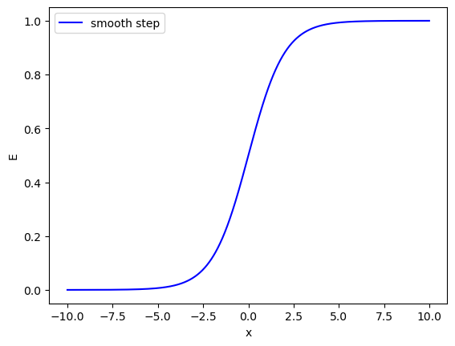
# Initial wave function
psi_0, psi_1 = 0, 1.0*epsilon
# Approximate wave function
E = 0.5
psis = np.zeros(len(xs))
psis = numerov(E, smooth_step)
pots = np.array([smooth_step(x) for x in xs])
fig, ax = plt.subplots()
ax.plot(xs, psis, 'k-', label=r'$\psi(x)$')
ax2 = ax.twinx()
ax2.plot(xs, pots, 'r--', label='smooth step potential')
ax.set_xlabel('x')
ax.set_ylabel(r'$\psi(x)$')
ax.legend()
ax2.legend()
<matplotlib.legend.Legend at 0x186b5a66710>
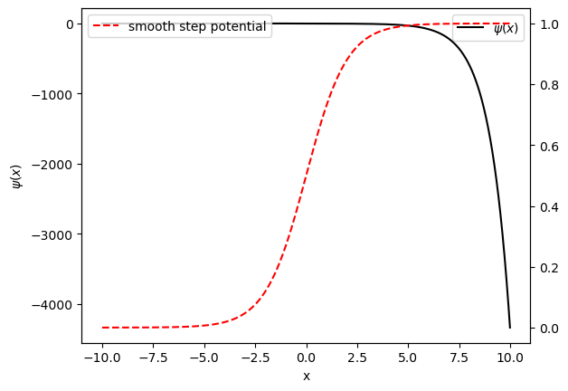
def inverse_smooth_step(x):
return smooth_step(-1.0*x)
pots = np.array([inverse_smooth_step(x) for x in xs])
fig, ax = plt.subplots()
ax.plot(xs, pots, 'b-', label='inverse smooth step')
ax.set_xlabel('x')
ax.set_ylabel('E')
ax.legend()
<matplotlib.legend.Legend at 0x186b610de50>
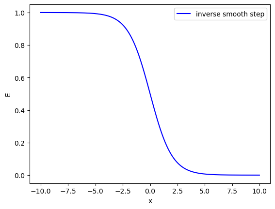
# Initial wave function
psi_0, psi_1 = 0, 1.0*epsilon
# Approximate wave function
E = 1.5
psis = np.zeros(len(xs))
psis = numerov(E, inverse_smooth_step)
pots = np.array([inverse_smooth_step(x) for x in xs])
fig, ax = plt.subplots()
ax.plot(xs, psis, 'k-', label=r'$\psi(x)$')
ax2 = ax.twinx()
ax2.plot(xs, pots, 'r--', label='inverse smooth step potential')
ax.set_xlabel('x')
ax.set_ylabel(r'$\psi(x)$')
ax.legend()
ax2.legend()
<matplotlib.legend.Legend at 0x186b61c1f90>
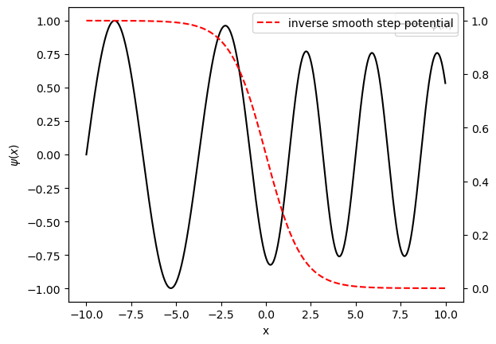
# Initial wave function
psi_0, psi_1 = 0, 1.0*epsilon
# Approximate wave function
E = 0.8
psis = np.zeros(len(xs))
psis = numerov(E, inverse_smooth_step)
pots = np.array([inverse_smooth_step(x) for x in xs])
fig, ax = plt.subplots()
ax.plot(xs, psis, 'k-', label=r'$\psi(x)$')
ax2 = ax.twinx()
ax2.plot(xs, pots, 'r--', label='inverse smooth step potential')
ax.set_xlabel('x')
ax.set_ylabel(r'$\psi(x)$')
ax.legend()
ax2.legend()
<matplotlib.legend.Legend at 0x186b63c3750>
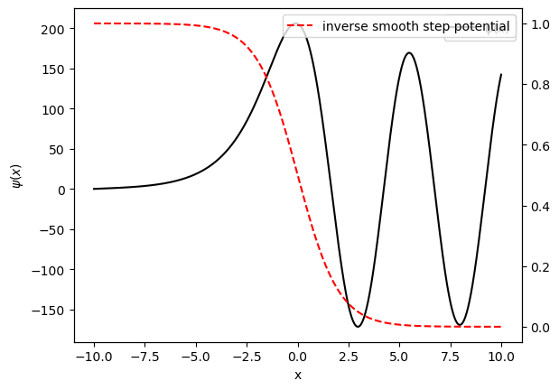
# globals
well_width = 10.0
def finite_well(x):
halfwidth = well_width/2.0
return inverse_smooth_step(x+halfwidth) + smooth_step(x-halfwidth)
pots = np.array([finite_well(x) for x in xs])
fig, ax = plt.subplots()
ax.plot(xs, pots, 'b-', label='finite well')
ax.set_xlabel('x')
ax.set_ylabel('E')
ax.legend()
<matplotlib.legend.Legend at 0x186b68d0050>
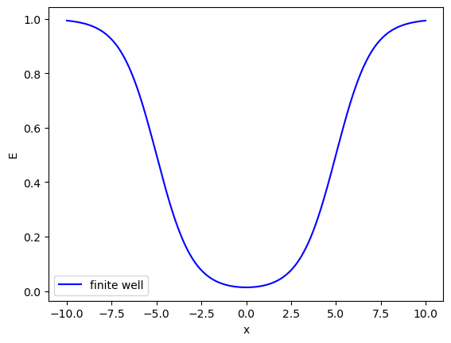
# Initial wave function
psi_0, psi_1 = 0, 1.0*epsilon
# Approximate wave function
E = 0.8
psis = np.zeros(len(xs))
psis = numerov(E, finite_well)
pots = np.array([finite_well(x) for x in xs])
fig, ax = plt.subplots()
ax.plot(xs, psis, 'k-', label=r'$\psi(x)$')
ax2 = ax.twinx()
ax2.plot(xs, pots, 'r--', label='inverse smooth step potential')
ax.set_xlabel('x')
ax.set_ylabel(r'$\psi(x)$')
ax.legend()
ax2.legend()
<matplotlib.legend.Legend at 0x186b697c550>
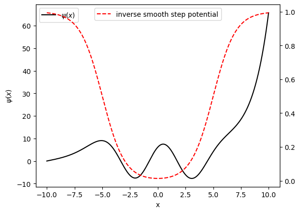
Quantum structures that host scattering states#
Step potential
Potential barrier
Step potential#
Depending on the comparison of energy of particle with the step height, there are two cases to consider
Quantum penetration \(E < V_0\)#
For this case, in the step region, the kinetic energy is less than zero, so the wavefunction has exponential nature. Outside the step region, the wavefunction has oscillatory nature. Since the wavefunction penetrates into the classically forbidden region, this effect is called quantum penetration.
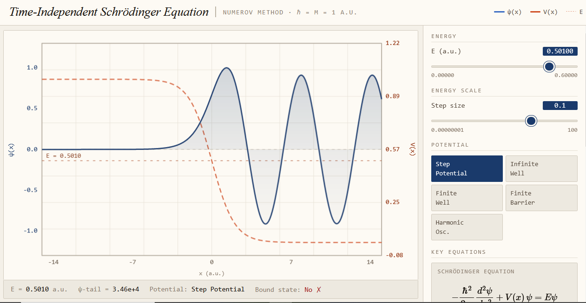
Quantum scattering \(E > V_0\)#
For this case, in the step region, the kinetic energy is greater than zero, so the wavefunction has oscillatory nature. Outside the step region, the wavefunction has oscillatory nature. However, the wavevector in both the regions are different; infact wavevector in step region is less than wave vector in outside region.
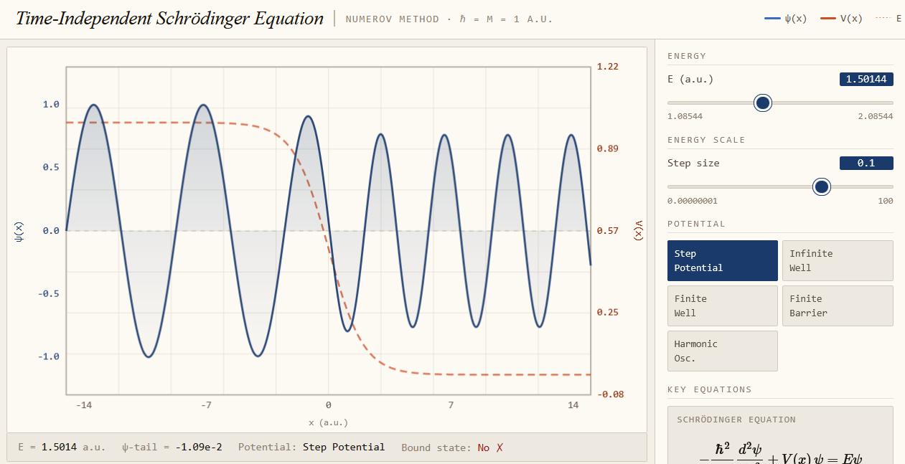